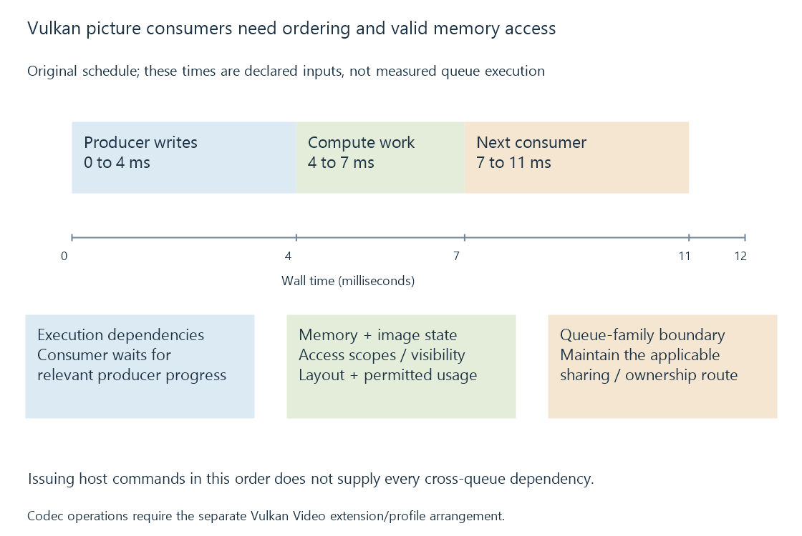

Vulkan for media processing
Vulkan exposes device queues, image resources and programmable processing whose formats, synchronization and ownership determine how pictures move through a compatible media pipeline.
A media application can use Vulkan to run programmable picture work and manage suitable GPU image resources. Queues, command buffers, formats and synchronization make the data relationship explicit.
Vulkan graphics or compute support is distinct from Vulkan Video, whose extensions expose particular codec operations.
Picture processing uses a defined device path
The application selects a physical device and supported queue arrangement. It creates or imports images accepted for the required uses, then records the processing commands.
A filter needs the actual picture format and intended colour interpretation. An image's storage format does not infer an HDR-to-SDR policy or select which subtitle to compose.

An Emby-related Vulkan processing route therefore needs an implemented filter and compatible resources, alongside a usable device/driver interface.
Ordering and visibility describe different requirements
Consider an original model with an input producer during 0–4 ms, compute processing during 4–7 ms and another consumer during 7–11 ms.
The compute stage begins after the relevant input write. The final consumer begins after the compute result is available.
An execution dependency establishes an order between operations. The applicable memory dependency and resource state establish how accesses to the produced data become valid for the consumer.
The host issuing those commands in that textual order is not, by itself, a complete synchronization strategy across independent queues.
Resources have a permitted usage and state
A picture image must support its requested usage and format. The chosen arrangement can require appropriate layout transitions and access scopes.
A resource prepared for one operation should not be silently treated as valid for every later operation. A decoder-output use, a shader read/write use and a presentation use can have different requirements.
Vulkan exposes the concepts needed to describe those relationships. A filter implementation supplies their concrete sequence for its selected resources.
Queue families can add an ownership boundary
When operations use different queue families, the applicable sharing/ownership arrangement must be maintained. Synchronization between the operations and ownership of the resource are related parts of a valid handoff.
External resource import/export has further compatibility and synchronization conditions. It establishes a specific sharing relationship rather than a universal proof that no copies occurred anywhere.
Frame surfaces and contexts develop those resource identities independently of the particular API.
See Also
- Vulkan Video profiles, queues and sessions
- OpenCL for media processing
- GPU compute and video processing
- Hardware frame surfaces and GPU contexts
- Zero-copy video pipelines and the boundary being avoided